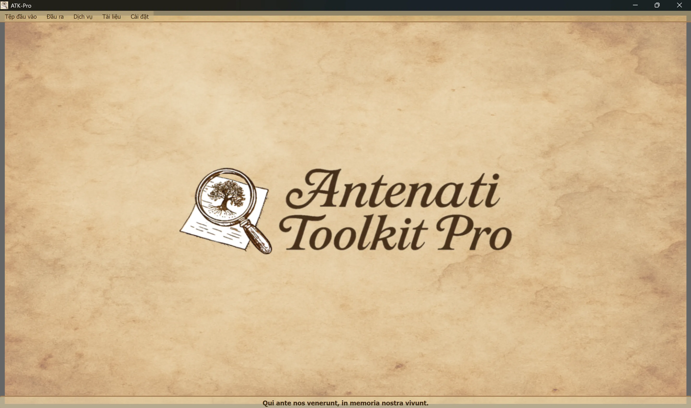

────────────────────────────────────────────────────────────────────────────────
Windows
ATK-Pro-Setup-vx.x.x.exe từ trang phát hành chính thứcLinux
ATK-Pro-vx.x.x.deb (Debian/Ubuntu) hay .tar.gz từ trang phát hànhsudo dpkg -i ATK-Pro-vx.x.x.deb hoặc nhấp đúp trong Nautilus/Files./ATK-Pro từ thư mục chiết xuấtmacOS
ATK-Pro-vx.x.x.dmg từ trang phát hànhWindows
C:\Program Files\ATK-Pro\C:\Users\[TuoNome]\Documents\ATK-Pro\output\C:\Users\[TuoNome]\Documents\ATK-Pro\input\Linux
/opt/ATK-Pro/ (deb) hoặc chiết xuất thư mục (.tar.gz)~/Documents/ATK-Pro/output/~/Documents/ATK-Pro/input/macOS
/Applications/ATK-Pro.app~/Documents/ATK-Pro/output/~/Documents/ATK-Pro/input/────────────────────────────────────────────────────────────────────────────────
Ngôn ngữ có:
Theo dữ liệu có được vào cuối năm 2025, ước tính có thể bao gồm khoảng 98% con cháu của người Ý và Ý hoặc Ý.
Khi bạn chạy lần đầu, chương trình tự động tạo những thư mục sau:
C:\Users\[TuoNome]\Documents\ATK-Pro\output\C:\Users\[TuoNome]\Documents\ATK-Pro\output\doc\ (mặc định tài liệu)C:\Users\[TuoNome]\Documents\ATK-Pro\output\reg\ (Bộ nhớ mặc định)~/Documents/ATK-Pro/output/input\ tương tự (tùy chọn, cho đầu vào tập tin)Trong khi xử lý thư mục tạm được tạo cho việc tải vềtiles_canvas_X/và, nếu cần, các tập tin tạm thời cho thế hệ của nó.
Mọi thư mục và tập tin tạm thời sẽ bị xoá tự động vào cuối tiến trình xử lý.
Chỉ xử lý tập tin cuối cùng còn lại (hình ảnh theo định dạng đã chọn, PDF, áp phích và siêu dữ liệu).
Để thay đổi các thư mục xuất, hãy dùng Trình đơn BAR Thiết lập « Chọn thư mục xuất ». Các lựa chọn được lưu và phục hồi tự động cho phiên chạy kế tiếp.
Lệnh Thiết lập hồ sơ tài nguyên nhóm Điều chỉnh xu hướng song song được dùng trong khi tải về, xây dựng lại ảnh và thế hệ PDF:
Hồ sơ không thay đổi chất lượng, quyền hạn hoặc số lượng tài liệu thu được. Những giới hạn riêng biệt của một cánh cổng tiếp tục được ưu tiên.
────────────────────────────────────────────────────────────────────────────────
Cửa sổ chính của công cụ Antenati Pro có một cấu trúc đơn giản và trực giác.

MỘT khẩu hiệu tiếng La - tinh “Hãy nhớ lại tầm quan trọng của rễ cây và trí nhớ tập thể.
Trên chót cửa sổ, dưới đầu:
[tập tin nhập] [ra ngoài] [Services] [Docuists] [ Hạ cánh]
Mỗi trình đơn chứa các nút và tùy chọn riêng (xem phần kế tiếp).
Nó quản lý việc tải hồ sơ IIIF:
├─ Esempio input
│ └─ Visualizza il file di esempio (mostra formato coppie: modalità D/R + URL)
├─ Apri input
│ └─ Seleziona un file .txt con i tuoi record IIIF
│ (Deve contenere coppie: modalità D/R su riga 1, URL su riga 2)
└─ Modifica input
└─ Modifica il file input attualmente caricato
(Aggiungi/rimuovi record, cambia URL, salva modifiche)
Quản lý xử lý và đầu ra:
├─ Elabora │ └─ Avvia il download, la ricostruzione e il salvataggio delle immagini │ (Mostra finestra di progresso in tempo reale) ├─ Apri cartella output │ └─ Apre in Esplora Risorse la cartella con i file elaborati └─ Visualizza elaborazioni precedenti └─ Lista dei record già elaborati
Danh sách các dịch vụ tích hợp:
├─ Ricerca assistita AI │ └─ Suggerisce portali, piste di ricerca e query genealogiche da verificare ├─ Visualizzazione Immagini │ └─ Viewer immagini scaricate e/o PDF generati ├─ Visualizzazione Metadati JSON │ └─ JSON originali e metadati (genealogici, tecnici, EXIF) ├─ OCR Avanzato │ └─ Testi manoscritti ottocenteschi, latino ecclesiastico, tardo-medievali ├─ Traduzione OCR │ └─ Traduzione automatica testi estratti nelle lingue selezionate └─ Esportazione GEDCOM └─ GEDCOM, Gramps, Family Tree Maker, Ancestry, MyHeritage, WikiTree, etc.
Truy cập tài nguyên và tài liệu:
├─ Disclaimer - Clausole legali e termini d'uso ├─ Presentazione autore - Background dell'autore del progetto ├─ Presentazione progetto - Storia, motivazioni, roadmap di ATK-Pro ├─ Guida - Indice principale della guida modulare └─ Informazioni - Versione, copyright, email di contatto
Cấu hình chung của chương trình:
├─ Cambia lingua
│ └─ Seleziona la lingua dell'interfaccia (richiede riavvio)
├─ Seleziona formati immagine
│ └─ Scegli tra PNG, JPG, TIFF e PDF (almeno 1 obbligatorio)
│ PDF può essere selezionato da solo o insieme ai formati immagine
│ La scelta viene memorizzata e pre-selezionata automaticamente alla sessione successiva
├─ Seleziona cartelle output
│ └─ Apre prima la scelta della modalità cartelle, poi le finestre di selezione:
│ • Cartella unica per tutti → una sola cartella per documenti e registri
│ • Cartelle separate doc/reg → una cartella per tutti i doc, una per tutti i reg
│ • Cartella per ogni record → una cartella distinta per ciascun record
│ La modalità e le cartelle vengono memorizzate e ripristinate alla sessione successiva
├─ Esporta configurazione
│ └─ Salva le impostazioni attuali in un file
├─ Importa configurazione
│ └─ Carica un file di impostazioni precedentemente salvato (ripristina tutte le preferenze e percorsi)
├─ Verifica aggiornamenti
│ └─ Controlla la disponibilità di nuove versioni del programma
└─ Chiudi
└─ Termina il programma (mostra banner di supporto PayPal.me)
────────────────────────────────────────────────────────────────────────────────
ATK-Pro có trong 20 ngôn ngữ:
Ngôn ngữ có thể được thay đổi bất cứ lúc nào thông qua Trình đơn tôm sông thay đổi ngôn ngữ.
Chương trình đòi hỏi một khởi động lại để áp dụng ngôn ngữ mới.
Khi khởi chạy lại, chương trình tự động nạp ngôn ngữ đã chọn mới.
Thay đổi ngôn ngữ được dịch:
Nếu mô hình mặc định bị ngừng hoặc không còn khả dụng, ATK-Pro sẽ truy vấn danh mục mà thông tin xác thực có thể truy cập, chọn một mô hình đa dụng tương thích với chức năng và với hình ảnh khi cần, rồi thử tối đa ba phương án thay thế. Cơ chế dự phòng không kích hoạt đối với lỗi hạn mức, mạng hoặc xác thực.
Ghi đè mô hình: mô hình được nhập thủ công vẫn có tính bắt buộc và không bao giờ bị thay thế tự động.